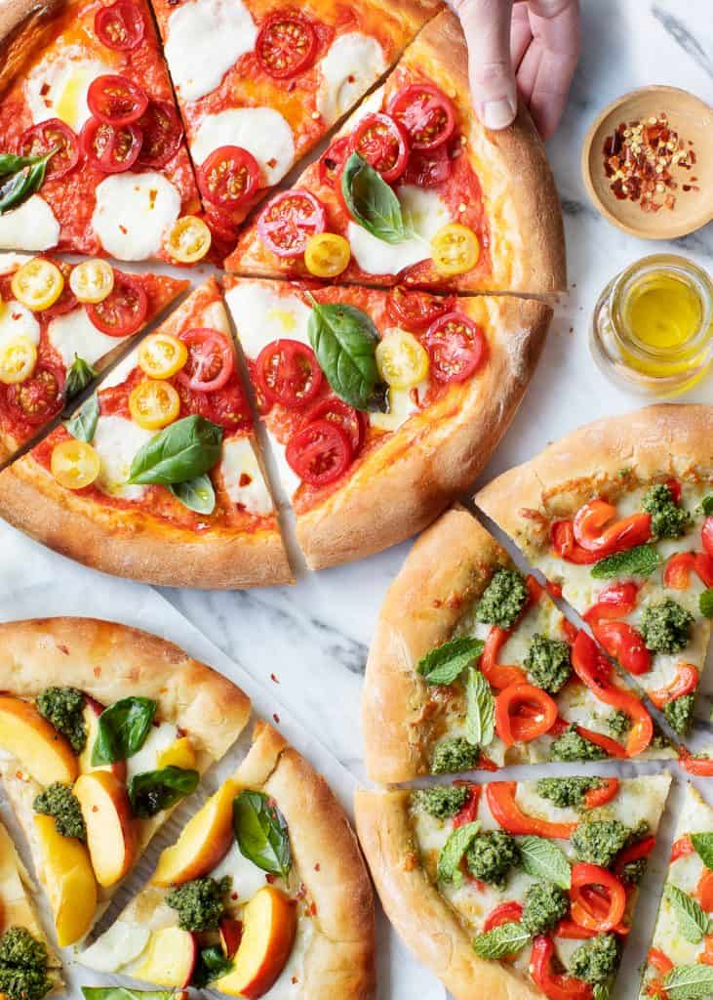

Pizza margarita

Descripcion
Taking time out of our busy days to put down our phones and celebrate every glorious flavor, guest, and memory makes me feel like we are truly living deliciously. For me, this also means eating seasonally. I visit local farmers markets to get inspiration for what to cook and what to eat, and in warm weather, Jack and I grow our own herbs on our back deck. How does eating seasonally relate to homemade pizza? Well, while cheese and sausage are the most popular pizza toppings where we live, I embrace summer’s plethora of beautiful vegetables (and even fruits!) to create out-of-the-box fresh combinations. And because we have so many gorgeous herbs right outside our door, I generously top my pizzas with fresh basil, mint, and homemade pesto to add a ton of fresh, delicious flavor.
Ingridients
- Pizza Dough, 1 recipe per pizza
- 8 ounces fresh bocconcini mozzarella, sliced
- Heaping ½ cup pizza sauce
- 10 fresh basil leaves
- ½ cup sliced cherry tomatoes
- Extra-virgin olive oil, for drizzling
- Red pepper flakes
Inicio